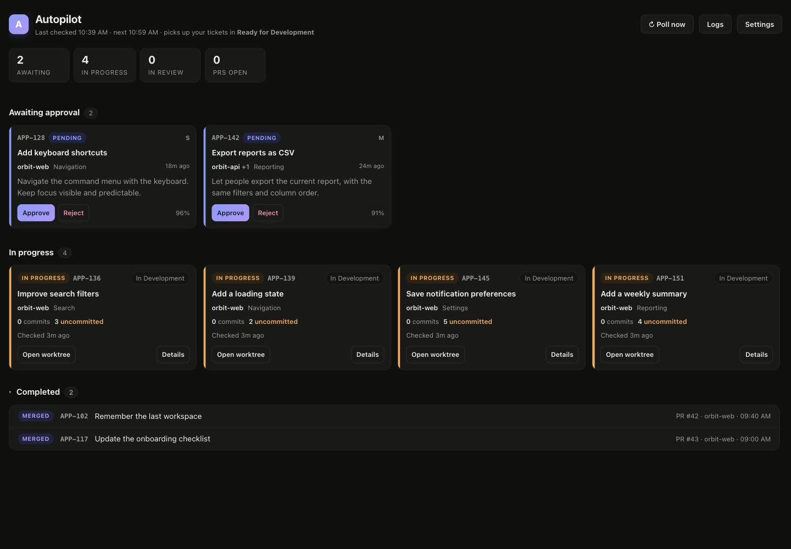
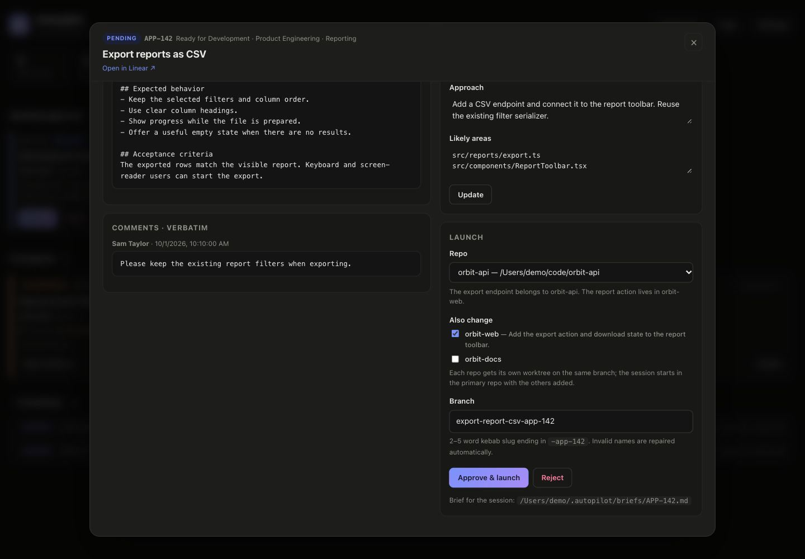
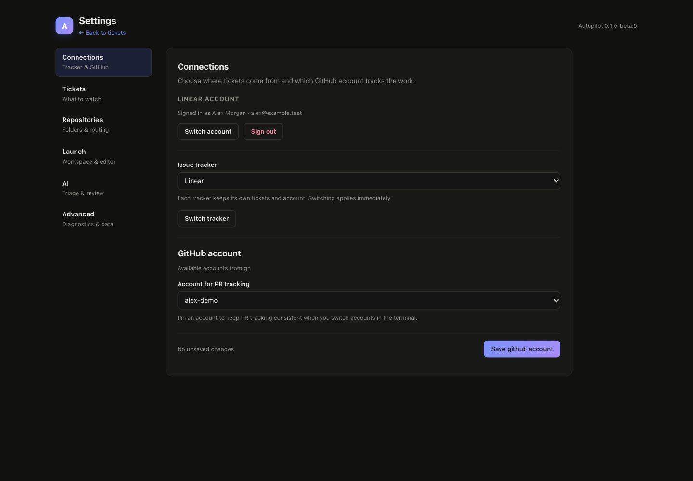

The ticket finds its repo.
Autopilot watches tickets assigned to you in Linear or Jira. It proposes the repo, a branch, and a short plan of attack.
Turn Linear or Jira tickets into Claude Code sessions. The repo, branch, and brief are ready.
You give the go-ahead.
Free & open source Native app or browser



Real app screens. Fictional tickets, repos, and accounts.
LESS SETUP. MORE BUILDING.
You already have a tracker, repos, and a way you like to code. Autopilot connects the steps in between.
Autopilot watches tickets assigned to you in Linear or Jira. It proposes the repo, a branch, and a short plan of attack.
Read the brief. Adjust the repo or branch. Approve when you’re ready, and your launcher opens Claude Code in a fresh worktree.
See commits, open PRs, and merged work back in Autopilot. Each ticket stays connected to the code it started.
THE 20-SECOND VERSION
A ticket. An approval. A workspace ready to go.
A ticket appears with the headline “Your next ticket. Ready to launch.” Autopilot shows the suggested repo, branch, and brief. The user clicks Approve. The launch controls show the repo, branch, and ticket brief. The real dashboard shows the same fictional ticket in progress and then under Completed with a merged PR. The video closes: “Your tickets. Your approval.” All ticket data is fictional and the workflow is condensed.
BUILT AROUND YOUR WORKFLOW
When a change spans repositories, Autopilot creates a worktree in each and gives Claude Code the extra directories.
Keep your worktree setup and lifecycle hooks. Open sessions where you already do your best work.
Superset · Supacode · Worktrunk
VS Code · Cursor · git
Use the browser or a native window. Your tracker sign-in stays in macOS Keychain, and you choose which repos Autopilot can use.
See the setupCOMING NEXT
Planned: support to develop and install plugins for Autopilot.
Build your own integrations or install plugins that connect the tools you want to use.
On the roadmap. Not available yet.
LET’S GET YOU SET UP
Install with Homebrew. Connect your tracker.
Choose your repos. You’re in control from there.
Requires macOS, Homebrew, Claude Code, and your chosen launcher. The native app supports macOS 13+ on Apple Silicon and Intel.
brew install --formula mrinalraj/tap/autopilot
brew services start autopilot
autopilot openA background service with a browser dashboard. Starts at login and keeps watching when you close the tab.
brew install --cask mrinalraj/tap/autopilot
open -a AutopilotA native window, Dock badge, and menu bar controls. The daemon and runtime are bundled in the app.
A note on the beta The app is ad-hoc signed and not notarized. If macOS blocks first launch, open System Settings → Privacy & Security → Open Anyway. Full installation guide ↗
No. Autopilot prepares a proposal first. You review the repo, branch, and brief, then approve or reject it. A Claude Code session only launches after you approve.
Yes. Autopilot supports Linear and Jira Cloud through the tracker’s OAuth sign-in. You choose which statuses should trigger pickup. Jira Cloud may require your admin to allow Atlassian’s MCP server.
You need macOS, a signed-in Claude Code CLI, and your chosen launcher. Homebrew installs the GitHub CLI dependency; setup helps you sign in for PR tracking. The native app supports macOS 13 or newer. Bun is only needed to build from source.
Autopilot is open source under the MIT license. Your Claude Code usage and any paid tracker or launcher plans remain separate.